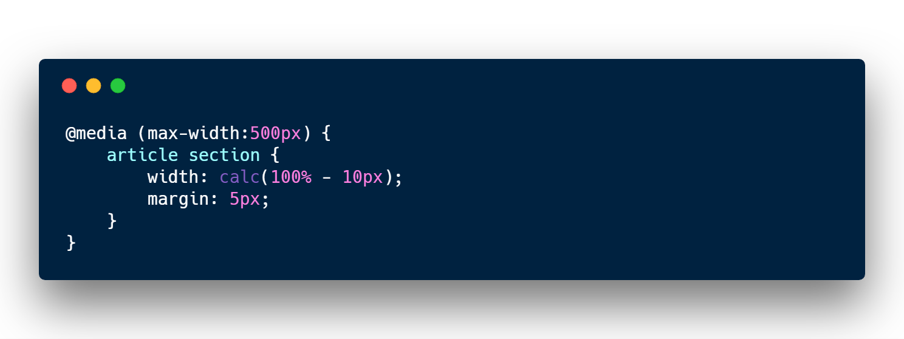

#6 HTML CSS JS 講座
CSS Layout
flexbox
flexboxとは？
Flexboxとは、ボックスのレイアウト方法を定めるCSS3の機能です。
Flexboxではボックスを横並びにしたり、右寄せ中央寄せ左寄せしたりと、様々なレイアウトを少量のコードで実現します。
Flexboxにおけるレイアウト
Flexboxにおけるレイアウトは右図のように「主軸」と「交差軸」の2つの軸からなっています。
引用：CSSレイアウトにfloatは古い! 初心者でも始められるFlexbox入門
https://ics.media/entry/13117
主軸方向の並び方
主軸に沿った方向の並び方はjustify-contentプロパティで設定します。
実際にそれぞれの値を設定して確認してみよう
-
flex-start
終端揃え（左揃え、デフォ値） -
space-between
均等配置（両端ボックスは始端と終端） -
center
中央揃え -
space-around
均等配置（両端ボックスは始端、終端からボックス間隔の半分の距離） -
flex-end
終端揃え（右揃え）
交差軸方向の並び方
交差軸方向の並び方はalign-itemsプロパティで設定します。
実際にそれぞれの値を設定して確認してみよう
-
stretch
親要素と同じ高さに伸びる（デフォ値） -
flex-start
始端揃え（上揃え） -
center
中央揃え -
flex-end
終端揃え（下揃え）
自分のHPをスマホ対応(レスポンシブ対応)に
pcやタブレットでの3カラムカードレイアウトからスマホでは1カラムカードレイアウトに変えるにはボックスのサイズを変えることで実現できます。
メニューもフレキシブル対応
Flexboxはデフォルトでは横並びなので縦並びにするにはflex-directionオプションでcolumnをします。